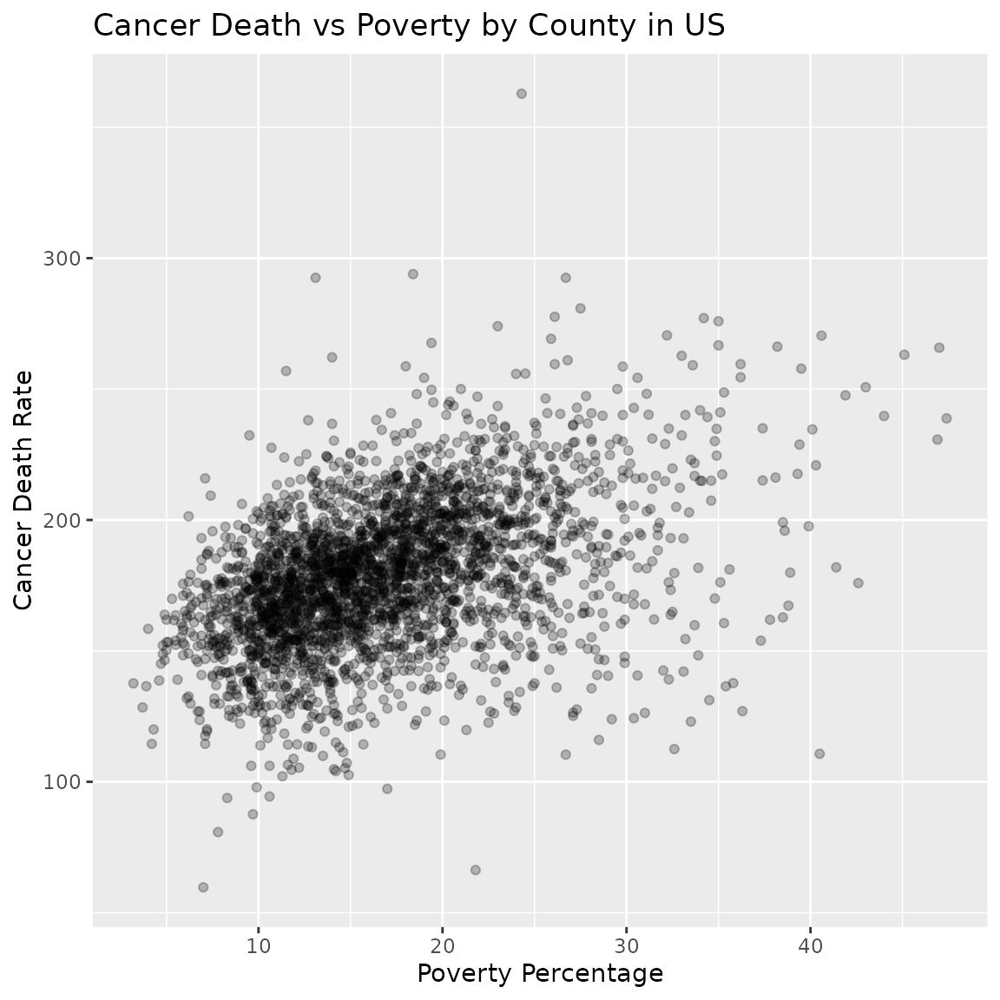

Cancer Death vs Poverty by County in US
cancer_reg.RmdLoad data
Read directly from this URL then rename one column.
Load data:
cancer_reg <- readr::read_csv("https://raw.githubusercontent.com/Arnab777as3uj/STAT6021-Cancer-Prediction-Project/master/cancer_reg.csv")
#> Rows: 3047 Columns: 34
#> ── Column specification ────────────────────────────────────────────────────────
#> Delimiter: ","
#> chr (2): binnedInc, Geography
#> dbl (32): avgAnnCount, avgDeathsPerYear, TARGET_deathRate, incidenceRate, me...
#>
#> ℹ Use `spec()` to retrieve the full column specification for this data.
#> ℹ Specify the column types or set `show_col_types = FALSE` to quiet this message.See a summary:
summary(cancer_reg)
#> avgAnnCount avgDeathsPerYear TARGET_deathRate incidenceRate
#> Min. : 6.0 Min. : 3 Min. : 59.7 Min. : 201.3
#> 1st Qu.: 76.0 1st Qu.: 28 1st Qu.:161.2 1st Qu.: 420.3
#> Median : 171.0 Median : 61 Median :178.1 Median : 453.5
#> Mean : 606.3 Mean : 186 Mean :178.7 Mean : 448.3
#> 3rd Qu.: 518.0 3rd Qu.: 149 3rd Qu.:195.2 3rd Qu.: 480.9
#> Max. :38150.0 Max. :14010 Max. :362.8 Max. :1206.9
#>
#> medIncome popEst2015 povertyPercent studyPerCap
#> Min. : 22640 Min. : 827 Min. : 3.20 Min. : 0.00
#> 1st Qu.: 38882 1st Qu.: 11684 1st Qu.:12.15 1st Qu.: 0.00
#> Median : 45207 Median : 26643 Median :15.90 Median : 0.00
#> Mean : 47063 Mean : 102637 Mean :16.88 Mean : 155.40
#> 3rd Qu.: 52492 3rd Qu.: 68671 3rd Qu.:20.40 3rd Qu.: 83.65
#> Max. :125635 Max. :10170292 Max. :47.40 Max. :9762.31
#>
#> binnedInc MedianAge MedianAgeMale MedianAgeFemale
#> Length:3047 Min. : 22.30 Min. :22.40 Min. :22.30
#> Class :character 1st Qu.: 37.70 1st Qu.:36.35 1st Qu.:39.10
#> Mode :character Median : 41.00 Median :39.60 Median :42.40
#> Mean : 45.27 Mean :39.57 Mean :42.15
#> 3rd Qu.: 44.00 3rd Qu.:42.50 3rd Qu.:45.30
#> Max. :624.00 Max. :64.70 Max. :65.70
#>
#> Geography AvgHouseholdSize PercentMarried PctNoHS18_24
#> Length:3047 Min. :0.0221 Min. :23.10 Min. : 0.00
#> Class :character 1st Qu.:2.3700 1st Qu.:47.75 1st Qu.:12.80
#> Mode :character Median :2.5000 Median :52.40 Median :17.10
#> Mean :2.4797 Mean :51.77 Mean :18.22
#> 3rd Qu.:2.6300 3rd Qu.:56.40 3rd Qu.:22.70
#> Max. :3.9700 Max. :72.50 Max. :64.10
#>
#> PctHS18_24 PctSomeCol18_24 PctBachDeg18_24 PctHS25_Over
#> Min. : 0.0 Min. : 7.10 Min. : 0.000 Min. : 7.50
#> 1st Qu.:29.2 1st Qu.:34.00 1st Qu.: 3.100 1st Qu.:30.40
#> Median :34.7 Median :40.40 Median : 5.400 Median :35.30
#> Mean :35.0 Mean :40.98 Mean : 6.158 Mean :34.80
#> 3rd Qu.:40.7 3rd Qu.:46.40 3rd Qu.: 8.200 3rd Qu.:39.65
#> Max. :72.5 Max. :79.00 Max. :51.800 Max. :54.80
#> NA's :2285
#> PctBachDeg25_Over PctEmployed16_Over PctUnemployed16_Over PctPrivateCoverage
#> Min. : 2.50 Min. :17.60 Min. : 0.400 Min. :22.30
#> 1st Qu.: 9.40 1st Qu.:48.60 1st Qu.: 5.500 1st Qu.:57.20
#> Median :12.30 Median :54.50 Median : 7.600 Median :65.10
#> Mean :13.28 Mean :54.15 Mean : 7.852 Mean :64.35
#> 3rd Qu.:16.10 3rd Qu.:60.30 3rd Qu.: 9.700 3rd Qu.:72.10
#> Max. :42.20 Max. :80.10 Max. :29.400 Max. :92.30
#> NA's :152
#> PctPrivateCoverageAlone PctEmpPrivCoverage PctPublicCoverage
#> Min. :15.70 Min. :13.5 Min. :11.20
#> 1st Qu.:41.00 1st Qu.:34.5 1st Qu.:30.90
#> Median :48.70 Median :41.1 Median :36.30
#> Mean :48.45 Mean :41.2 Mean :36.25
#> 3rd Qu.:55.60 3rd Qu.:47.7 3rd Qu.:41.55
#> Max. :78.90 Max. :70.7 Max. :65.10
#> NA's :609
#> PctPublicCoverageAlone PctWhite PctBlack PctAsian
#> Min. : 2.60 Min. : 10.20 Min. : 0.0000 Min. : 0.0000
#> 1st Qu.:14.85 1st Qu.: 77.30 1st Qu.: 0.6207 1st Qu.: 0.2542
#> Median :18.80 Median : 90.06 Median : 2.2476 Median : 0.5498
#> Mean :19.24 Mean : 83.65 Mean : 9.1080 Mean : 1.2540
#> 3rd Qu.:23.10 3rd Qu.: 95.45 3rd Qu.:10.5097 3rd Qu.: 1.2210
#> Max. :46.60 Max. :100.00 Max. :85.9478 Max. :42.6194
#>
#> PctOtherRace PctMarriedHouseholds BirthRate
#> Min. : 0.0000 Min. :22.99 Min. : 0.000
#> 1st Qu.: 0.2952 1st Qu.:47.76 1st Qu.: 4.521
#> Median : 0.8262 Median :51.67 Median : 5.381
#> Mean : 1.9835 Mean :51.24 Mean : 5.640
#> 3rd Qu.: 2.1780 3rd Qu.:55.40 3rd Qu.: 6.494
#> Max. :41.9303 Max. :78.08 Max. :21.326
#> Rename the “TARGET_deathRate” column to “cancer_death_rate”:
cancer_reg <- dplyr::rename(cancer_reg, "cancer_death_rate" = "TARGET_deathRate")Make scatter plot, giving points alpha=25% opacity:
ggplot(cancer_reg, aes(x = povertyPercent, y = cancer_death_rate)) +
geom_point(alpha = 0.25) +
xlab("Poverty Percentage") +
ylab("Cancer Death Rate") +
ggtitle("Cancer Death vs Poverty by County in US")